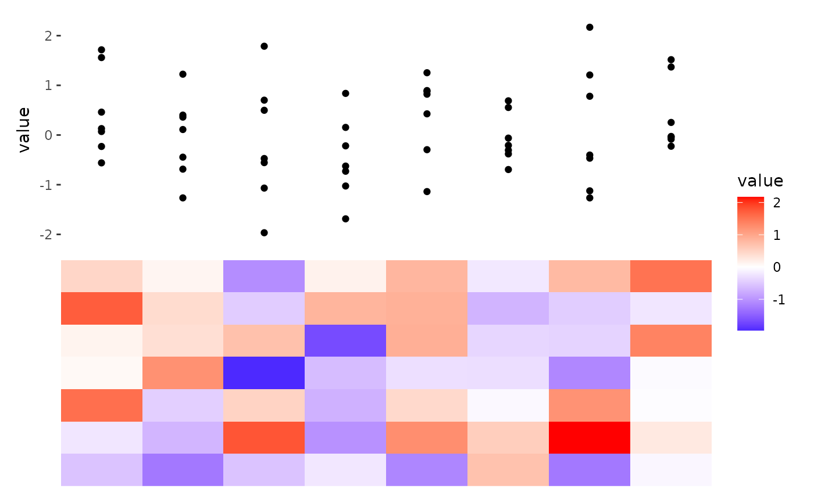
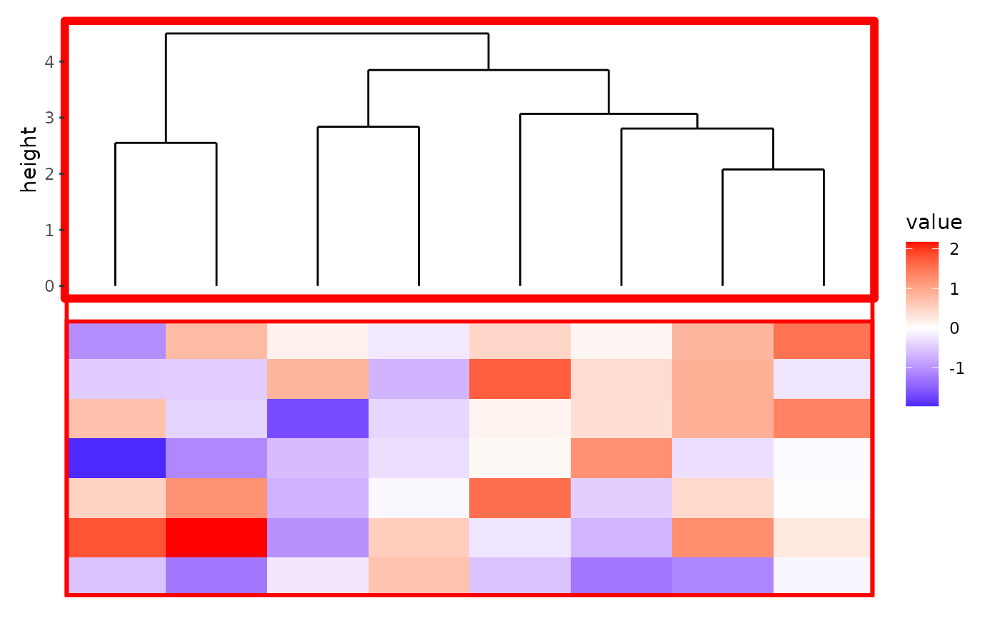

![[Experimental]](figures/lifecycle-experimental.svg)
+: Adds elements to the active plot in the active layout.&: Applies elements to all plots in the layout.-: Adds elements to multiple plots in the layout.
Arguments
- e1
A
quad_layout()/ggheatmap()orstack_layout()object.- e2
An object to be added to the plot.
Details
The + operator is straightforward and should be used as needed.
In order to reduce code repetition ggalign provides two operators for
adding ggplot elements (geoms, themes, facets, etc.) to multiple/all plots in
quad_layout()/ggheatmap() or stack_layout() object: - and &. See vignette("operator") for details.
Examples
set.seed(123)
small_mat <- matrix(rnorm(56), nrow = 7)
ggheatmap(small_mat) +
anno_top() +
ggalign() +
geom_point(aes(y = value))
#> → heatmap built with `geom_tile()`

# `&` operator apply it to all plots
ggheatmap(small_mat) +
anno_top() +
align_dendro() &
theme(panel.border = element_rect(
colour = "red", fill = NA, linewidth = unit(2, "mm")
))
#> → heatmap built with `geom_tile()`

# If the active layout is the annotation stack, the `-` operator will only
# add the elements to all plots in the active annotation stack:
ggheatmap(small_mat) +
anno_left(size = 0.2) +
align_dendro(aes(color = branch), k = 3L) +
align_dendro(aes(color = branch), k = 3L) -
# Modify the the color scales of all plots in the left annotation
scale_color_brewer(palette = "Dark2")
#> → heatmap built with `geom_tile()`
# If the active layout is the `stack_layout()` itself, `-`
# applies the elements to all plots in the layout except the nested
# `ggheatmap()`/`quad_layout()`.
stack_alignv(small_mat) +
align_dendro() +
ggtitle("I'm from the parent stack") +
ggheatmap() +
# remove any active context
stack_active() +
align_dendro() +
ggtitle("I'm from the parent stack") -
# Modify the the color scales of all plots in the stack layout except the
# heatmap layout
scale_color_brewer(palette = "Dark2") -
# set the background of all plots in the stack layout except the heatmap
# layout
theme(plot.background = element_rect(fill = "red"))
#> → heatmap built with `geom_tile()`